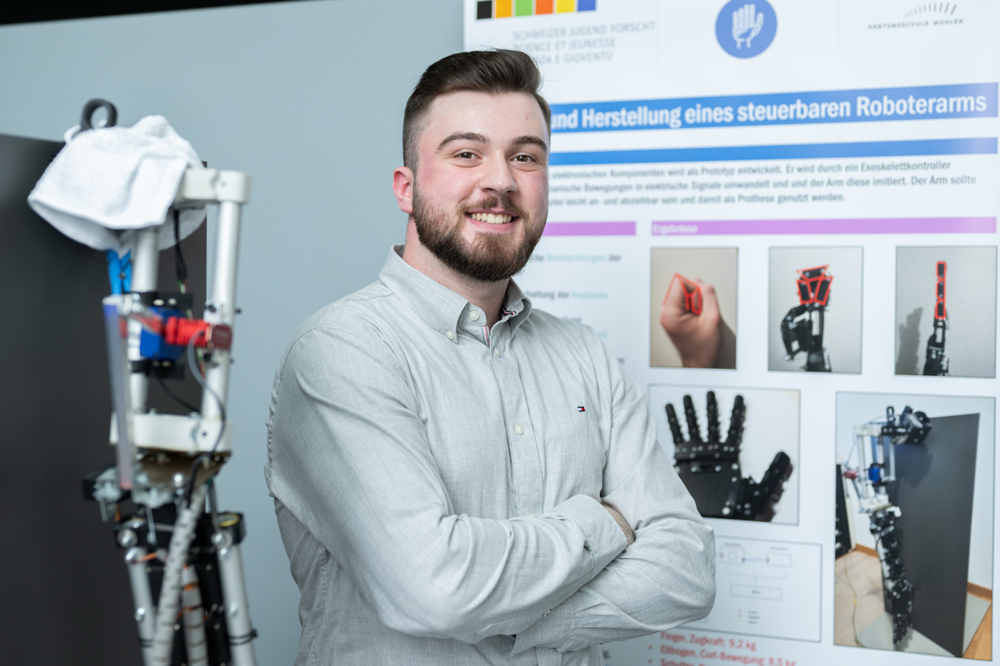

About
Engineering decisions should be rigorous, explainable, and buildable.
I am Idris Zuncevski, a mechanical engineer with a strong focus on turning technical complexity into clear, testable, and production-viable solutions.
How I Work
My method balances simulation detail with practical constraints. I prioritize realistic assumptions, robust safety factors, and transparent trade-off documentation throughout the design process.
Core Focus
- Mechanical system architecture and component design
- Stress validation and design optimization
- Design for manufacturing and maintainability
- High-quality engineering documentation